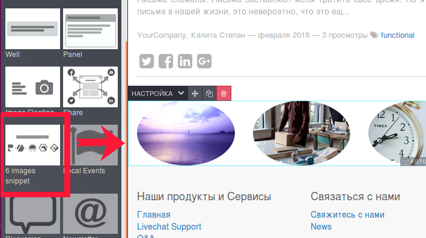

<section class="oe_container">
    <div class="oe_row oe_spaced">
        <h2 class="oe_slogan" style="color:#875A7B;">BTEGRICO vacancy task 7</h2>
        <h3 class="oe_slogan">Create a snippet (a block that can be selected in Bilder) reflecting 6 pictures, each of which leads to another page, the pictures can be changed from the builder.</h3>
        <div class="oe_demo oe_picture oe_screenshot">
            
        </div>
        <div class="oe_demo oe_picture oe_screenshot">
            
        </div>
        <div class="oe_demo oe_picture oe_screenshot">
            
        </div>
    </div>
</section>

<section class="oe_container oe_separator">
</section>
